专题10 一元一次方程基础应用题分类训练02

考点01 古代问题
考点02 阶梯计费问题
考点03 配套问题
考点04 新能源相关问题
考点05 比例相关问题
考点06 日历问题

考点01 古代问题
1．牧童分杏各争竞，不知人数不知杏．三人五个多十枚，四人八枚两个剩．问：有几个牧童几个杏？（选自《算法统宗》）．题目大意：牧童们要分一堆杏，不知道人数也不知道有多少个杏．若3人一组，每组5个杏，则多10个杏；若4人一组，每组8个杏，则多2个杏．求有几个牧童？几个杏？
2．在明代数学家程大位（1533—1606）所著的《算法统宗》中有这样一道题：“假如井不知深，先将绳三折入井，绳长四尺；后将绳四折入井，亦长一尺．问井深及绳长各若干?”
题意是：“用绳子测量井深，把绳子折成三折来量，井外余绳4尺；把绳子折成四折来量，井外余绳1尺．井深和绳长各是多少?”
请列方程解决这个问题．
3．《九章算术》中记载有一道关于“盈不足术”的经典问题，其原文表述如下：“今有共买鸡，人出九，盈一十一；人出六，不足十六．问：人数、鸡价各几何？”译文为：有若干人一起买一只鸡，若每人出9钱，则多出11钱；若每人出6钱，则还差16钱．求买鸡的人数、一只鸡的价格各是多少？
4．《九章算术》中有这样一段记载：今有善行者行一百步，不善行者行六十步．大意为：同样时间内，走路快的人能走100步，走路慢的人只能走60步．假定两者步长相等，据此回答以下问题：
(1)走路慢的人先走100步，走路快的人开始追赶，当走路慢的人再走600步时，请问谁在前面？两人相隔多少步？
(2)走路慢的人先走200步，走路快的人走多少步才能追上走路慢的人？
5．《孙子算经》中有一题；今有妇人河上荡杯，津吏问：杯何以多？妇人曰有客．吏曰：客几何？妇人曰：二人共饭，三人共羹，四人共肉，凡用杯六十五，不知客几何？大意：有一位妇女在河边洗碗，管理桥梁的官吏见了，问道：“你要洗的碗为什么这样多？”妇人回答说：“家里来了客人．”官吏又问：“来了多少客人？”妇人说：“我家来的客人，2人共用一只饭碗，3人共用一只汤碗，4人共用一只肉碗，总共用了65只碗．请你算算吧，我家的客人有多少个？”请解决这道古题．
6．《九章算术》是人类科学史上应用数学的“算经之首”，书中记载：清明游园，共坐八船，大船满六，小船满四，三十八学子，满船坐观，请问客家，大小几船？其大意为：清明时节出去游园，所有人共坐了8只船，大船每只坐6人，小船每只坐4人，38人刚好坐满，问：大小船各有几只？
7．我国明代数学家程大位编撰的《算法统宗》记载了“绳索量竿”问题：“一条竿子一条索，索比竿子长一托，折回索子来量竿，却比竿子短一托，问索、竿各长几何？”译文为：“有一根竿和一条绳，若用绳去量竿，则绳比竿长5尺；若将绳对折后再去量竿，则绳比竿短5尺，问绳和竿各有多长？”（注：“托”和“尺”为古代的长度单位，1托
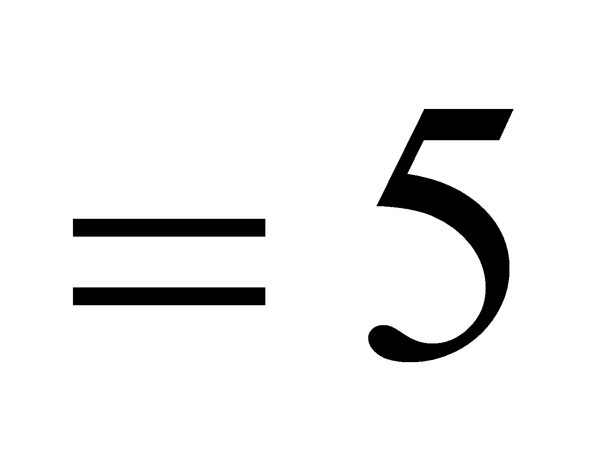
尺）8．中国古代人民在生产生活中发现了许多数学问题，在《孙子算经》中记载了这样一个问题，大意为：有若干人乘车，若每车乘坐 人，则
人，则 辆车无人乘坐；若每车乘坐人，则
辆车无人乘坐；若每车乘坐人，则 人无车可乘，问共有多少辆车，多少人？
人无车可乘，问共有多少辆车，多少人？
考点02 阶梯计费问题
9．某市居民的燃气收费，按户为基础、年为周期进行阶梯收费，具体如表所示．请根据表中信息解答下列问题：
阶梯 | 年用气量x（ | 收费单价 |
第一阶梯 |
| 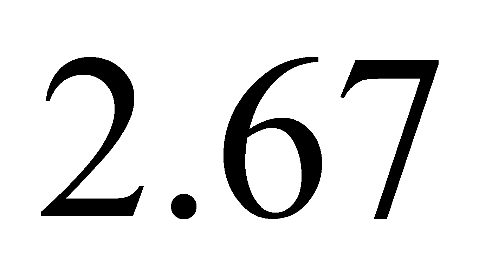 元/ |
第二阶梯 |
| 3.15元/ |
第三阶梯 |
| 3.63元/ |
备注：若家庭人口不超过四人，按照上表进行收费；若超过四人，每增加一人，第一、二阶梯年用气量的上限分别增加、 | ||
 的部分
的部分 的部分
的部分 以上的部分
以上的部分 ．
．(1)一户3人家庭，若年用气量为 ，则该年此户需缴纳燃气费用为_________元；若年用气量为
，则该年此户需缴纳燃气费用为_________元；若年用气量为 ，则该年此户需缴纳燃气费用为_________元；
，则该年此户需缴纳燃气费用为_________元；
(2)一户不超过4人的家庭，年用气量x超过了 ，设该年此户需缴纳燃气费用为y元，请用含x的代数式表示y；
，设该年此户需缴纳燃气费用为y元，请用含x的代数式表示y；
(3)甲户家庭人口为3人，乙户家庭人口为5人，2025年甲乙两户缴纳的燃气费用均为3951元．请判断甲乙两户年用气量分别达到哪个阶梯？并求出2025年甲乙两户年用气量分别是多少立方米（结果精确到
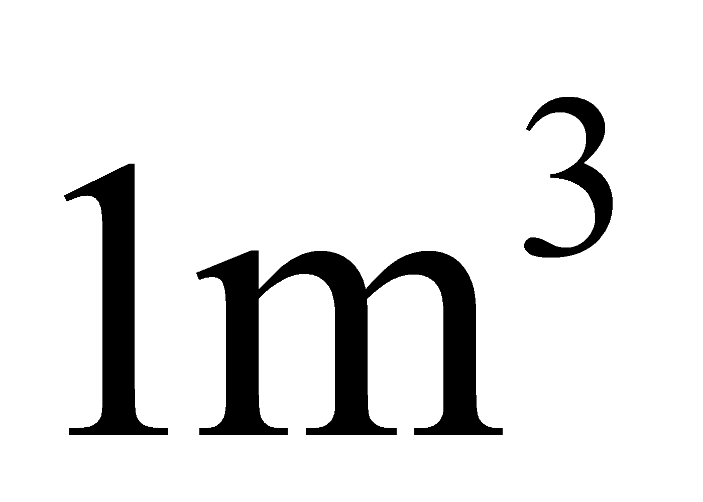
）？10．某地天然气收费方案如下：
阶梯 | 年用气量 | 价格 | 补充说明 |
第一阶梯 |
| 3元/ | 当家庭人口超过3人时，每增加1人，第一、二阶梯年用气量的上限将分别增加 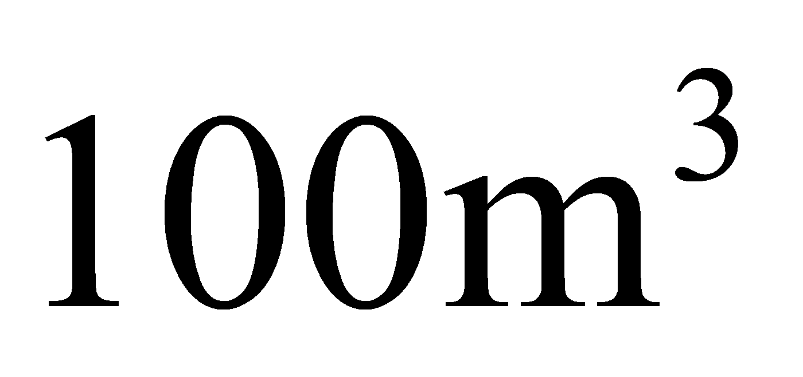 ，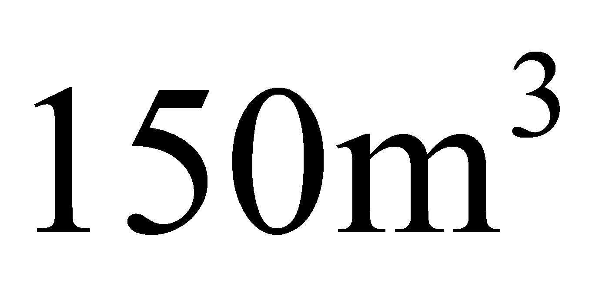 ，同时，第二、三阶梯年用气量的下限随着调整，每一阶梯的价格保持不变 |
第二阶梯 |
| 4元/ | |
第三阶梯 | 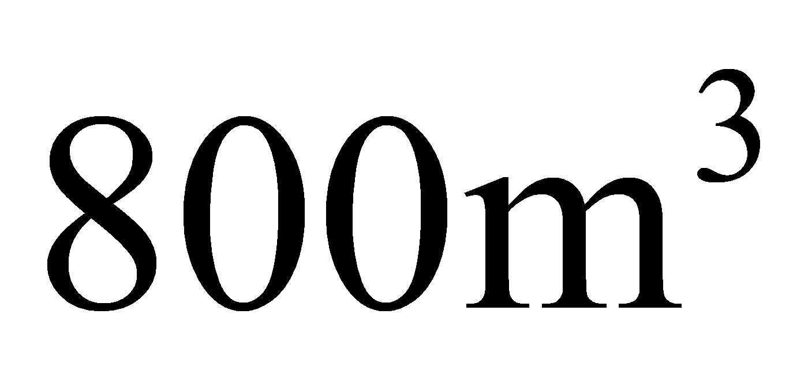 以上的部分 | 5元/ |
 （含400）的部分
（含400）的部分 （含800）的部分
（含800）的部分(1)某家庭当年用气量为
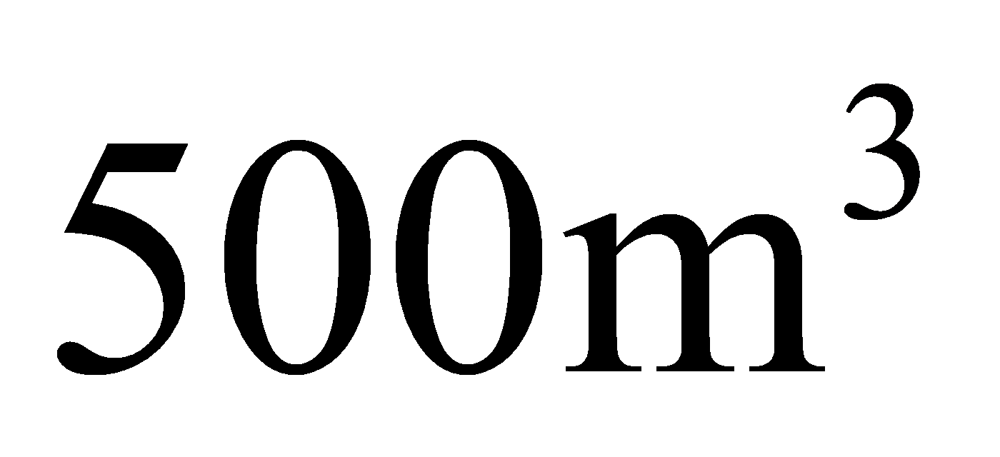
．若该家庭人口为3人，则需缴纳燃气费用_______元；若该家庭人口为4人，则需缴纳燃气费用_______元．(2)甲户家庭人口为3人，乙户家庭人口为4人，某年甲、乙两户年用气量之和为
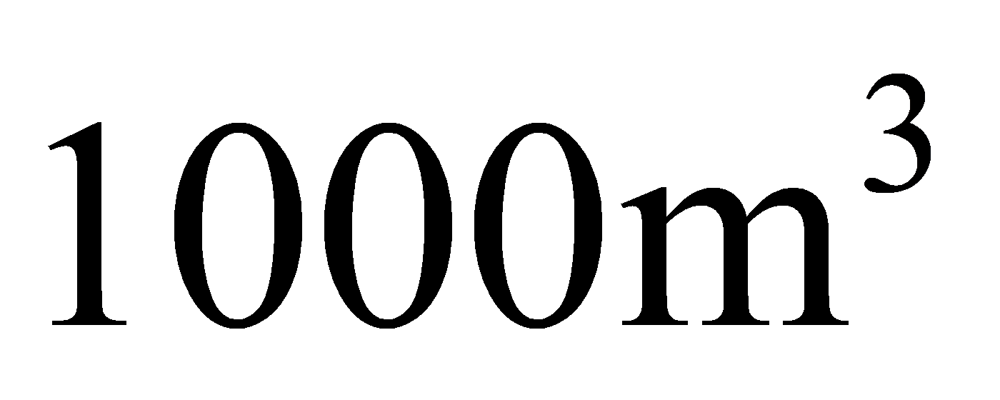
，甲户年用气量大于乙户年用气量．设甲用户年用气量为 ，请用 x 分别表示甲、乙两户需缴纳的燃气费．
，请用 x 分别表示甲、乙两户需缴纳的燃气费．(3)某公司共有22名员工，员工宿舍有3人间和4人间两种类型的房间可供选择，且员工所选择的房间必须住满．结算天然气费用时，将每间宿舍视作一户家庭，按上表的收费标准进行收费．假定每名员工的年用气量为
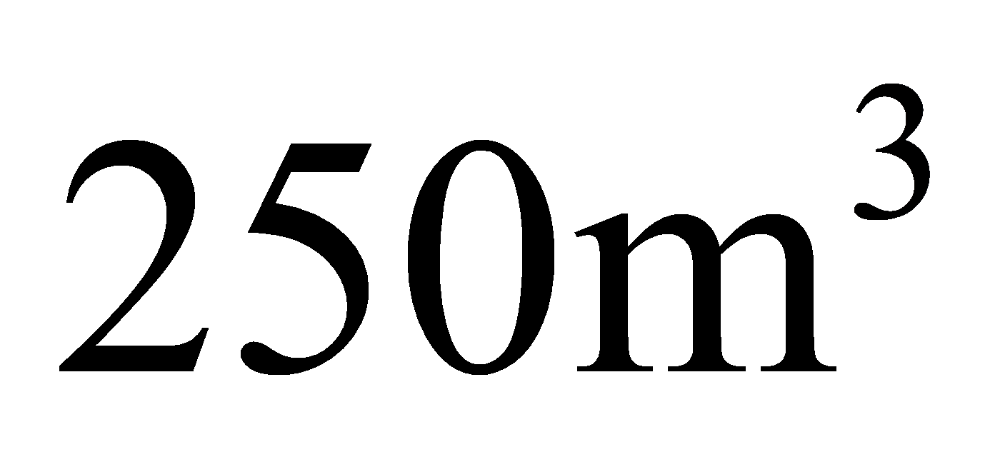
，要使该公司员工宿舍当年缴纳总天然气费用最低，则3人间的房间数为多少？11．为鼓励市民节约用水，某地推行阶梯式水价计费制，标准如下：每户居民每月用水不超过10立方米的按每立方米 元计费；超过10立方米的部分按每立方米
元计费；超过10立方米的部分按每立方米 元计费．
元计费．
(1)若每月用水量16立方米，需交水费__________元．
(2)若某户居民在某个月份用水 立方米，思考并回答：
立方米，思考并回答：
当不超过10立方米，需交水费__________元；当超过10立方米，需交水费__________元（用含有的式子表示）．
(3)小颖家11月份共交水费33元，请问她家11月共用水多少立方米．
12．某市为鼓励市民节约用水，增强节水意识，决定对居民用水实行“阶梯收费”办法．规定：每户每月不超过月用水标准部分的水价为2.5元/吨，超过月用水标准部分的水价为3.5元/吨．该市小明家5月用水量为12吨，交水费32元．
(1)请判断小明家5月用水是否超过标准用水量．
(2)该市规定的每户月用水标准量是多少吨？
13．为鼓励居民节约用电，某市对居民用电实行“阶梯电价”，按年度用电量分三个档次计费．小明家2025年前8个月的用电量共计2000千瓦时，根据缴费记录，这8个月共缴纳电费1060元．已知该市第一档电价为0.5元/千瓦时，第二档电价超出部分每千瓦时比第一档提价0.05元．请问小明家8月份的用电量是否超过了第一档的年度基础电量？请通过计算说明．（注：为简化计算，本题假设每月用电量平均，且只考虑前两档电价）
14．某市居民用气阶梯气价标准如下：
阶梯 | 年度用气量 （单位：立方米） | 价格 （单位：元/立方米） |
第一阶梯 | 大于0小于等于 | a |
第二阶梯 | 大于 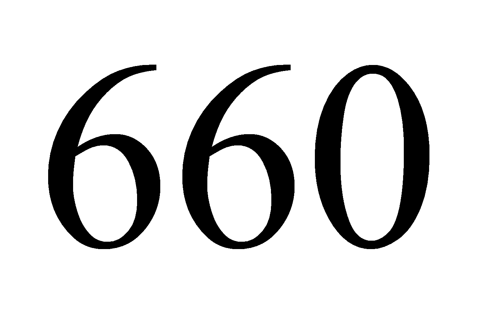 的部分 | 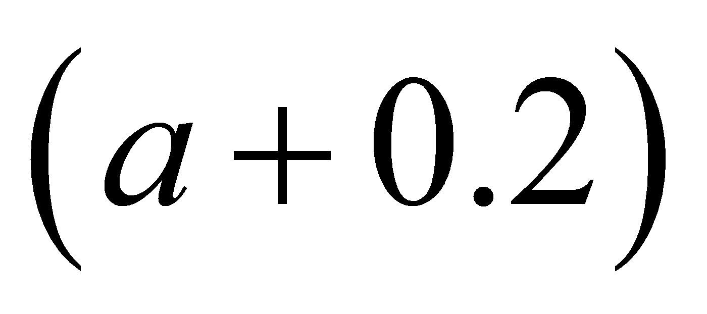 |
第三阶梯 | 以上的部分 | 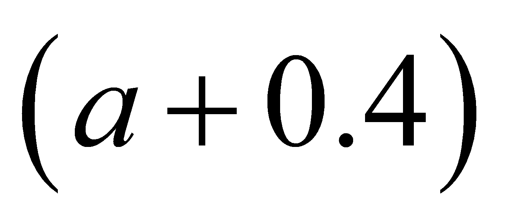 |
(1)小依家年度用气 立方米，应缴纳气费______元(用含a的式子表示)；已知该年度缴纳气费
立方米，应缴纳气费______元(用含a的式子表示)；已知该年度缴纳气费 元，则
元，则 ______
______
(2)在（1）的结论下，该市某天然气公司推出了“居民家庭采暖用气”政策，居民用户在申请执行该政策后，全年用气量划分为两个阶段．每年1月、2月以及 月共三个月为采暖期，无论用气量为多少，均按第一阶梯气价计费，其余的9个月为非采暖期，用气总量按普通阶梯气价计费．小钟家成功申请了“居民家庭采暖用气”，今年的年用气总量为
月共三个月为采暖期，无论用气量为多少，均按第一阶梯气价计费，其余的9个月为非采暖期，用气总量按普通阶梯气价计费．小钟家成功申请了“居民家庭采暖用气”，今年的年用气总量为 立方米，共缴纳气费
立方米，共缴纳气费
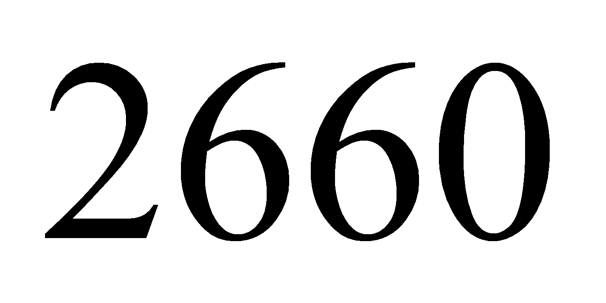
元．已知非采暖期用气量不低于 立方米，求小钟家今年采暖期用气费用．
立方米，求小钟家今年采暖期用气费用．15．为鼓励居民节约用电，某市电力公司采用分段计费方式计算电费：每月用电不超过180度时，按每度 元计费：每月用电超过180度但不超过280度时，其中的180度仍按原标准收费，超过部分按每度
元计费：每月用电超过180度但不超过280度时，其中的180度仍按原标准收费，超过部分按每度 元计费．收费标准如表：
元计费．收费标准如表：
用电量 | 不超过180度 | 超过180度但不超过280度的部分 | 超过280度的部分 |
收费标准（元/度） |
|
|
|

(1)若小明家9月用电量为160度，则他们家9月的电费是 元；
若小明家10月用电量为230度，则他们家10月的电费是 元．
(2)若小明家11月用电量为 度；请用含的代数式表示他们家11月应缴的电费；
度；请用含的代数式表示他们家11月应缴的电费；
(3)若小明家12月缴的电费166元，则该月小明家用电量是多少？
16．为了加强公民的节水意识，合理利用水资源，某市采用价格调控的手段以达到节水的目的，该市自来水收费的价目表如下（消费按月份结算）：
价目表 | |
每月用水量 | 价格 |
不超过 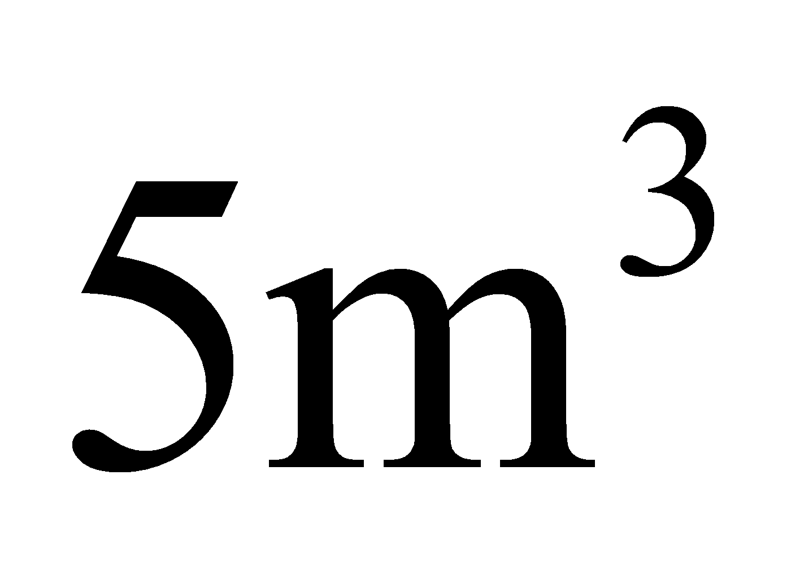 | 3元/ |
超出不超出 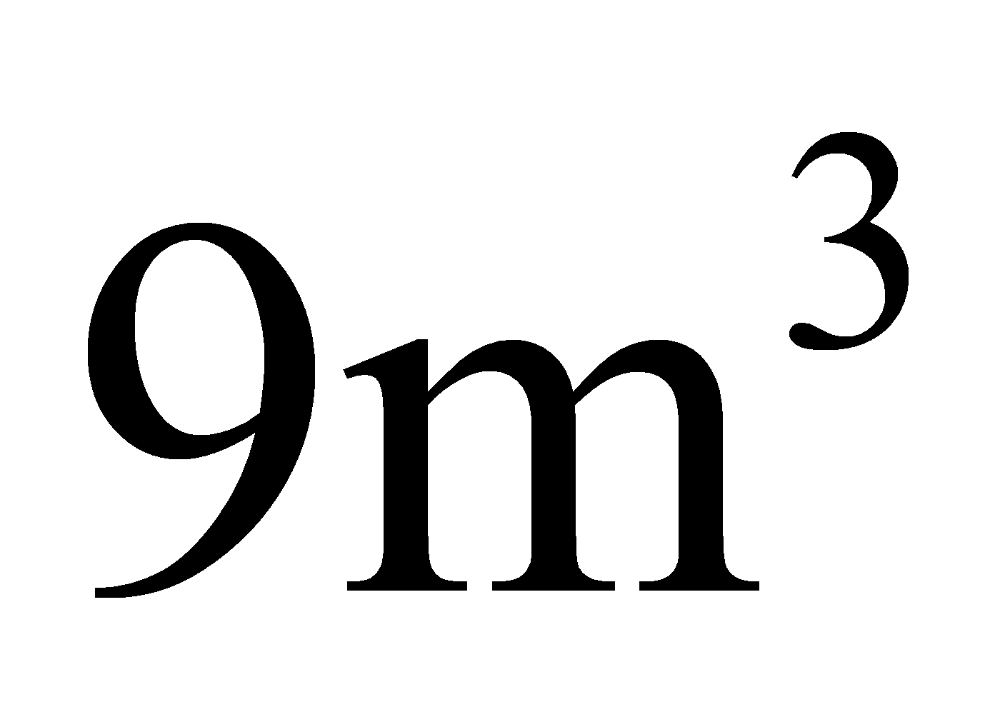 的部分 | 5元/ |
超出的部分 | 7元/ |

(1)某户居民1月份和2月份的用水量分别为 和
和
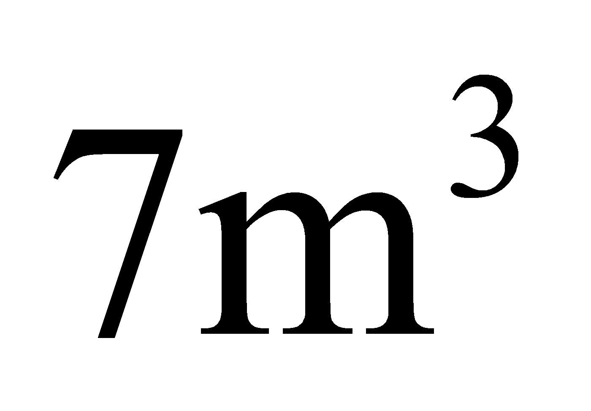
，则应收水费分别是 元和 元．(2)若该户居民3月份用水量为
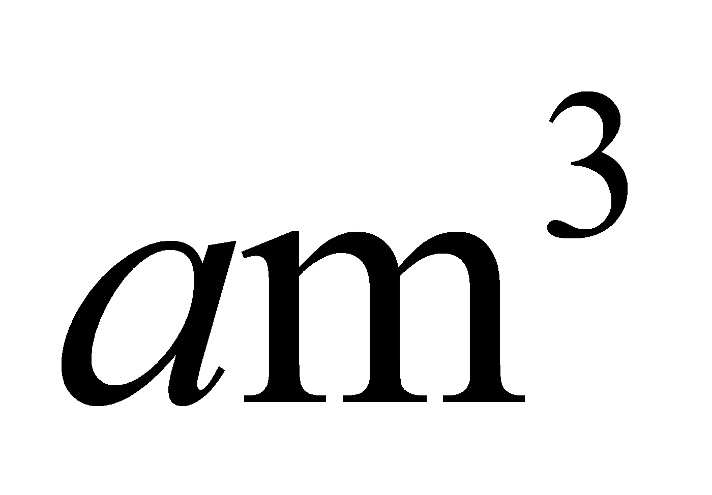
（其中 ），则应收水费多少元（用含a的式子表示，并化简）？
），则应收水费多少元（用含a的式子表示，并化简）？(3)若该户居民4月份交水费
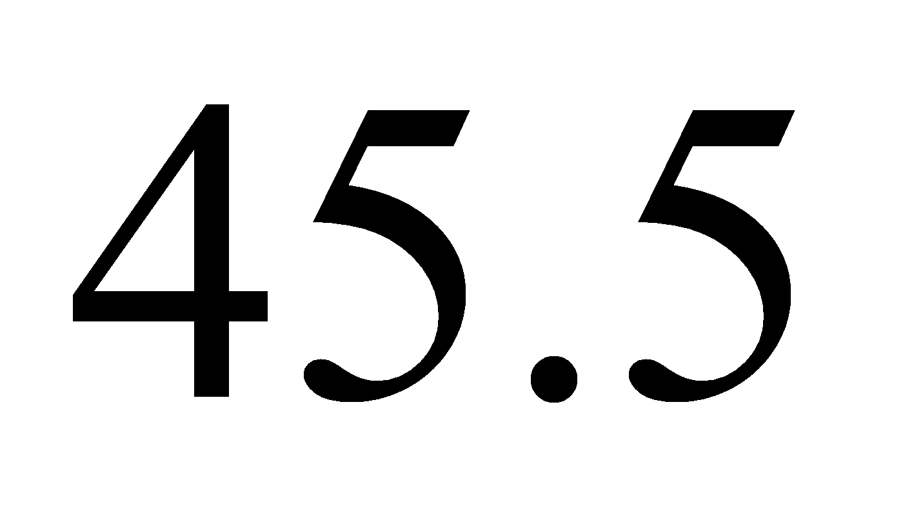
元，该户居民4月份用水多少立方米？考点03 配套问题
17．某纺织厂生产床品四件套（1个床单，1个被套，2个枕套），现计划安排15名工人缝制枕套和被套，已知每人每天可缝制200个枕套或50个被套．
(1)为使每天缝制的枕套和被套刚好配套，则每天缝制的被套有多少个？
(2)若每个枕套和每个被套均需1个拉链，现有600个枕套，300个被套，300个床单以及885个拉链，则最终能组成多少套四件套？
18．在北京冬奥会中，志愿者们手上、脖子上的丝巾非常美丽．车间70名工人承接了制作丝巾的任务，已知每人每天平均生产手上的丝巾1800条或者脖子的丝巾1200条，一条脖子上的丝巾要配两条手上的丝巾．为了使每天生产的丝巾刚好配套，应分配多少名工人生产脖子上的丝巾，多少名工人生产手上的丝巾？
19．某车间为提高生产总量，在原有14名工人的基础上，新调入若干名工人．使得调整后车间的总人数比新调入工人人数的2倍多6人．
(1)求新调入多少名工人？
(2)若该车间每名工人每天可以生产240个螺栓或400个螺母，若1个螺栓需要2个螺母．在新调入工人后，应该安排多少名工人生产螺栓，才能使每天生产的螺栓和螺母刚好配套？
20．中国瓷器对世界文明的影响丝毫不亚于中国的四大发明，那些制作精美的瓷器更是成了西方人眼中的“神器”，以至于他们就用瓷器（
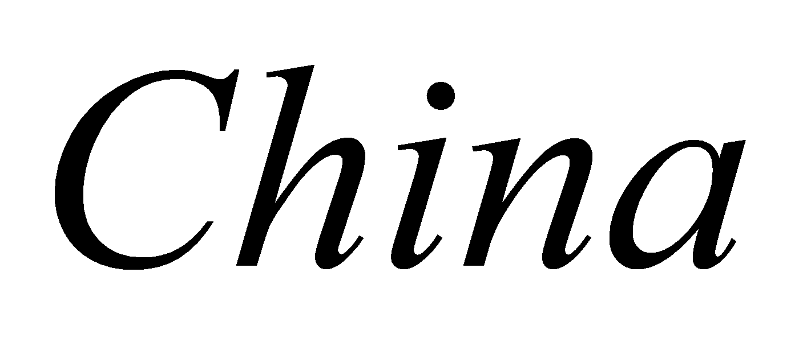
）来称呼中国，某瓷器厂共有90名工人，每名工人一天能做200只茶杯或50只茶壶，如果8只茶杯和1只茶壶为一套茶具．(1)应安排多少人生产茶杯，可以使每天生产的茶具刚好配套？
(2)按（1）中的安排，每天可以生产多少套茶具？
21．某校七年级四班共有学生 人，其中男生比女生人数的
人，其中男生比女生人数的 多
多 人．劳技课上，老师组织同学们自己动手制作便携式收纳盒，要求每名学生做盒身
人．劳技课上，老师组织同学们自己动手制作便携式收纳盒，要求每名学生做盒身 个或盒底
个或盒底 个．
个．
(1)七年级四班男生和女生各多少人？
(2)原计划男生做盒身，女生做盒底，每个盒身匹配个盒底，那么同学们做出的盒身与盒底不能完全配套，老师决定调一部分男生去支援女生，使制作的盒身与盒底刚好配套．调去支援的男生有多少人？
22．某家具生产车间有30名工人生产家用餐桌和椅子，1张桌子和4把椅子配成一套．已知一名工人一天可以生产2张桌子或7把椅子．
(1)分别安排多少名工人生产桌子和椅子可使一天生产的桌椅正好配套？
(2)去年一套桌椅成本为200元，今年一套餐桌的成本比去年提高了25%，今年的总投入比去年多1万元，结果生产的餐桌比去年少50套，则去年总投入多少万元？
23．巢湖某工厂主要生产各种样式的包装盒，现收到一批糖果盒的订单，主管要安排工人即刻生产．已知该工厂共有84名工人，其中女工人数比男工人数的3倍少36人，并且每个工人平均每小时可以制作盒身50个或盒底110个．
(1)该工厂有男工、女工各多少人？
(2)该工厂原计划男工负责制作盒身，女工负责制作盒底，要求一个盒身配两个盒底，那么调多少名女工帮男工制作盒身时，才能使每小时制作的盒身与盒底恰好配套？
24．某校新进了一批课桌椅，七年级（2）班的学生利用活动课时间帮助学校搬运部分课桌椅，已知七年级（2）班共有学生45人，其中男生人数比女生人数的2倍少24人，要求每个学生搬运6张桌子或者搬运15把椅子．请解答下列问题：
(1)七年级（2）班男生、女生分别有多少人？
(2)一张桌子配两把椅子，为了使搬运的桌子和椅子刚好配套，应该分配多少个学生搬运桌子，多少个学生搬运椅子？
考点04 新能源相关问题
25．用一元一次方程解答下列问题．
当前，重庆正加速打造智能网联新能源汽车之都，同时重庆也是全国三个机动车保有量超过万辆的城市之一，消费潜力巨大．某
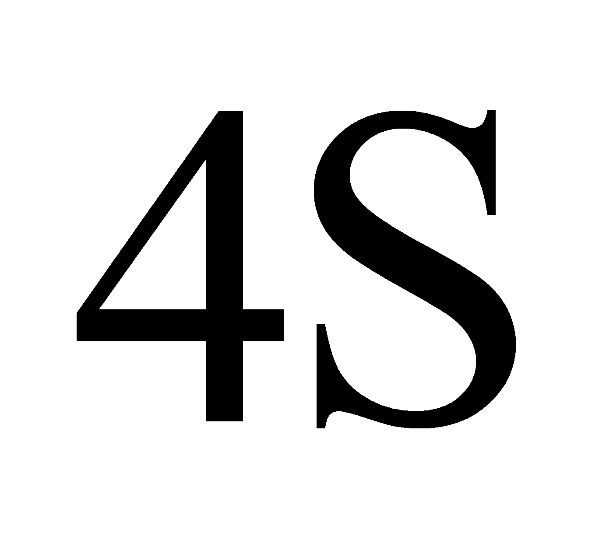
汽车销售店顺应浪潮，月份主推了 款燃油车和
款燃油车和 款新能源汽车，已知该店销售
款新能源汽车，已知该店销售 辆款燃油车和辆款新能源汽车的总销售额为
辆款燃油车和辆款新能源汽车的总销售额为 万元，销售辆款燃油车、辆款新能源汽车的总销售额为
万元，销售辆款燃油车、辆款新能源汽车的总销售额为 万元．
万元．(1)求月份每辆款、款汽车售价分别为多少万元？
(2)因为每种车型销售热度不一，所以源头厂家一直保持严格的配货制度，即该店每引进辆款新能源汽车则必须引进辆款燃油车．该店月份引进的款燃油车和款新能源汽车全部销售一空，其中引进了款新能源汽车 辆．月份由于新能源汽车电池成本大幅提高，与月份相比，每辆款新能源汽车售价提高了
辆．月份由于新能源汽车电池成本大幅提高，与月份相比，每辆款新能源汽车售价提高了 ，同时为了响应国家的号召，对款新能源汽车每辆进行
，同时为了响应国家的号召，对款新能源汽车每辆进行 万元的现金补贴，每辆款燃油车的售价则保持不变，最终月份的款燃油车销量相比月份款燃油车的销量降低了
万元的现金补贴，每辆款燃油车的售价则保持不变，最终月份的款燃油车销量相比月份款燃油车的销量降低了
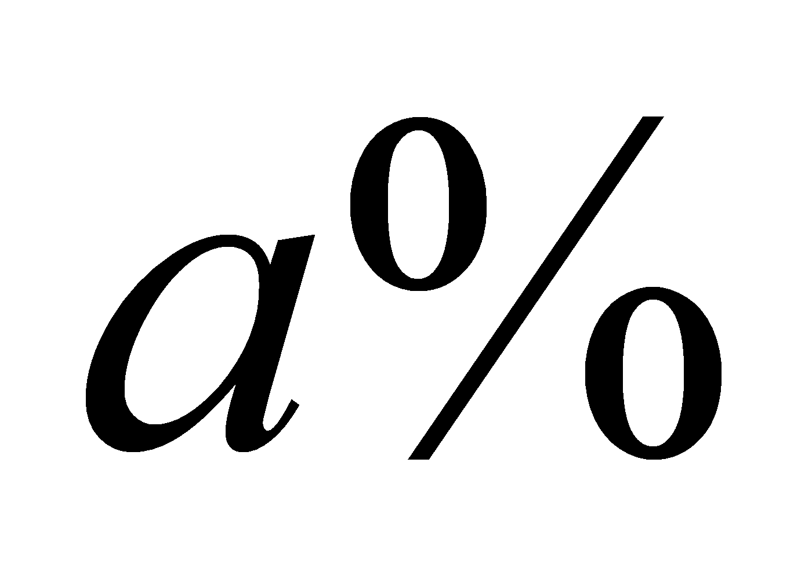
，款新能源汽车销量相比月份款新能源汽车销量提高了 ，月份两款车的总销售额比月份两款车的总销售额提高了
，月份两款车的总销售额比月份两款车的总销售额提高了 ，求
，求 的值．
的值．26．某汽车企业第一季度销售x万辆新能源汽车，第二季度销售的新能源汽车比第一季度的 倍少1万辆，第三季度销售的新能源汽车比第一季度的2倍多6万辆．
倍少1万辆，第三季度销售的新能源汽车比第一季度的2倍多6万辆．
(1)求该汽车企业前三季度一共销售的新能源汽车的数量（用含有x的代数式表示）；
(2)如果该汽车企业第三季度比第二季度多销售
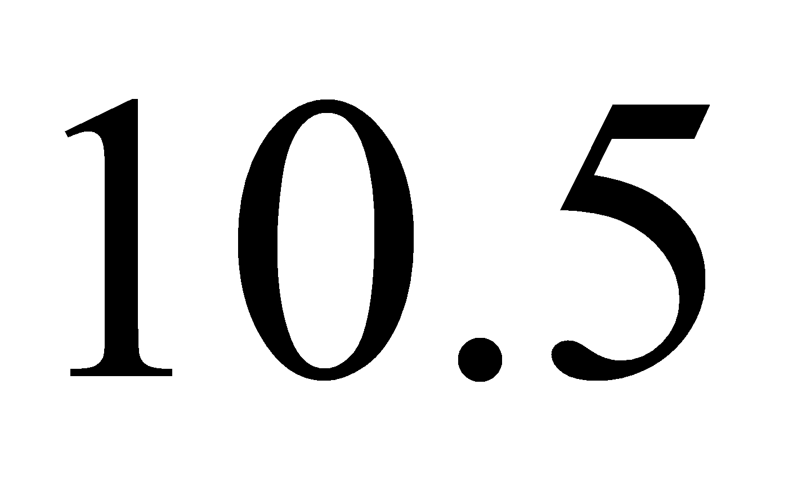
万辆新能源汽车，求该企业前三季度销售的新能源汽车数量．27．列方程解应用题
小华一家驾驶某款新能源汽车外出游玩，去时选择普通公路，返回时选择高速公路．走普通公路比高速公路的路程多60公里，这款新能源汽车在普通公路上行驶平均每百公里耗电20度，在高速公路上行驶比普通公路上行驶平均每百公里耗电增加 ，该车选择的充电站充电综合电费均为
，该车选择的充电站充电综合电费均为 元/度．最终发现走普通公路的电费比高速公路的电费少15元，求返回时所走高速公路的路程．
元/度．最终发现走普通公路的电费比高速公路的电费少15元，求返回时所走高速公路的路程．
28．列方程解应用题
重庆赛力斯公司生产的问界M7和问界M9两款新能源汽车深受消费者的欢迎，该公司生产汽车零部件的甲车间有工人50名，乙车间有工人60名，因接到加急生产一批新能源汽车的任务，所以该公司新增40名工人分配到甲、乙两个车间，分配后甲车间的总人数比分配后乙车间的总人数多10人．求新分配到甲车间、乙车间的人数各有多少人？
29．为了解新能源汽车的能耗情况，某测评公司推出了“真实路况能耗挑战”测试．测试路线由市区道路和高速道路两部分组成．如果挑战结束后车辆的百公里平均能耗不高于
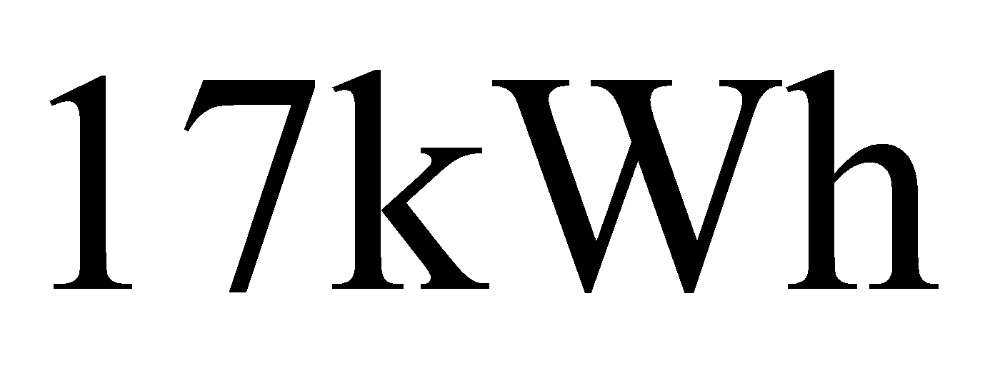
，则视为挑战成功．一款新能源汽车在测试路线的市区道路中百公里平均能耗为 ，在高速道路中百公里平均能耗为
，在高速道路中百公里平均能耗为 ，此次测试的总能耗为
，此次测试的总能耗为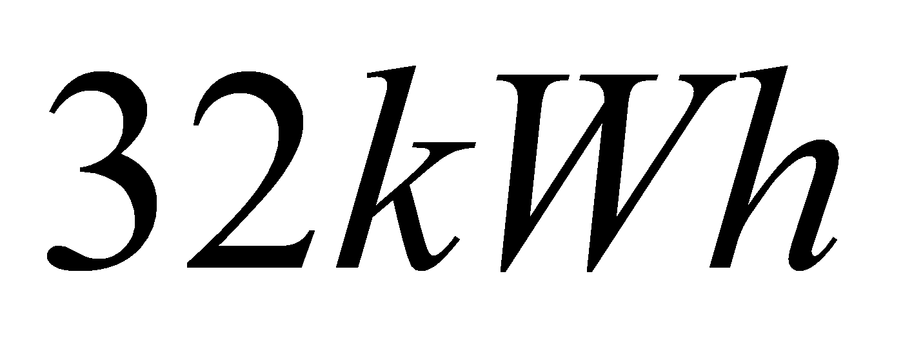
．若本次测试道路中市区道路的长度是高速道路长度的4倍，请通过计算判断该车是否能挑战成功．30．某汽车品牌4s店2月售出了A型燃油车15辆和型新能源汽车22辆，其中A型燃油车的售价是型新能源汽车售价的 ，4s店2月的销售额为534万元．
，4s店2月的销售额为534万元．
(1)求每辆A型燃油车和每辆型新能源汽车的售价分别为多少万元；
(2)4s店3月向汽车厂商订购A型燃油车和型新能源汽车共40辆，已知A型燃油车的订单价为12万元，型新能源汽车的订购单价为10万元，4s店订购40辆汽车共花费432万元．若每辆A型燃油车的售价在2月基础上降价
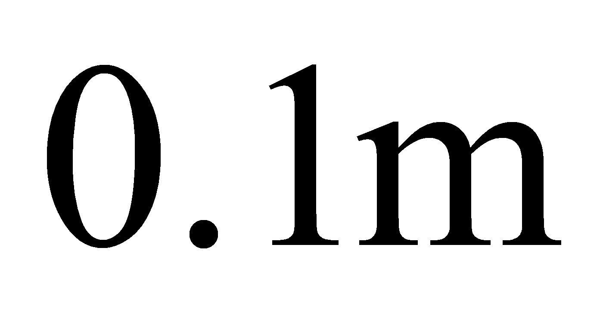
万元，每辆型新能源汽车的售价在2月基础上打95折，4s店售完这40辆汽车的利润率为 ．求
．求 的值．
的值．31．2024年，成都全市新增注册登记新能源汽车10万辆以上，新增充电桩不低于4万个，某充电桩收费标准如下：充电时长
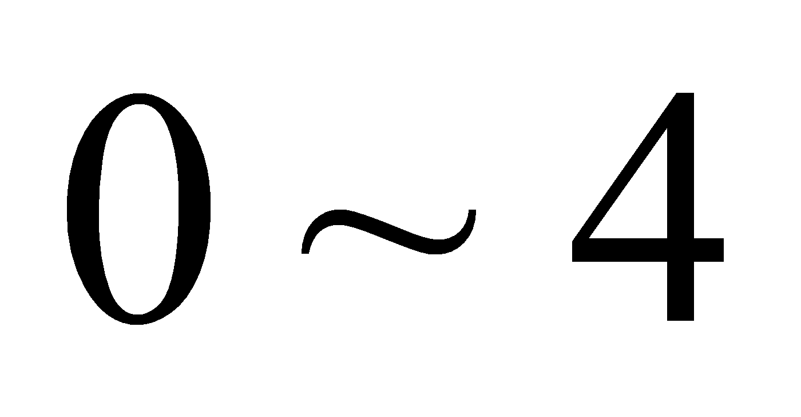
小时（含4小时）每小时收费3元，充电时长超过4小时，超过部分每小时收费2元．(1)若小石在该充电桩充电2.5小时，需支付费用多少元？
(2)若小石在该充电桩充电（ ）小时，需支付费用_____元（用含有的代数式表示）．
）小时，需支付费用_____元（用含有的代数式表示）．
(3)小石每周在该充电桩充电一次，某月，小石第一周和第二周在该充电桩连续充电共10小时（第一周充电时长超过第二周），共支付充电费用27元，则小石第一周和第二周各充电多少小时？
32．2024年7月24日至12月31日，珠海市面向在我国境内转让本人名下车辆，并在珠海新购新能源车的个人消费者实行汽车更新置换促消费活动．根据新购车辆价格（以《机动车销售统一发票》上的价格为准），分三档一次性发放购车补贴∶
第一档：购车价格为7万元(含)至15万元(不含)的新能源车补贴0.9万元/辆；
第二档：购车价格为15万元(含)至25万元(不含)的新能源车补贴1.3万元/辆；
第三档：购车价格为25万(含)以上的新能源车补贴1.6万元/辆．
在此期间，小珠购买了一台B品牌新能源车，小海购买了一台T品牌新能源车，两人购车都符合政策补贴，其中小珠得到财政补贴1.3万元，又知每台T品牌新能源车售价比B品牌新能源车售价多10万元，两人购买新能源车除财政补贴外实际共付款43.1万元．
(1)B品牌和T品牌新能源车的购车价格各是多少万元？
(2)结合以上补贴政策，请你分析当购车价格为多少万元时折扣最低？（请通过计算说明）
考点05 比例相关问题
33．某农户为消灭棉田中的害虫，需配制一种药水．已知这种药水中药液与水的质量比为
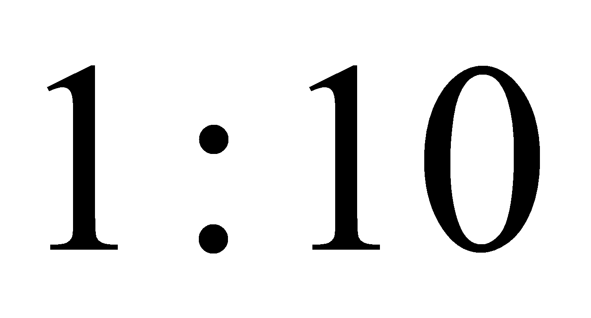
．配制 这种药水，需要多少千克的这种药液？
这种药水，需要多少千克的这种药液？34．甲、乙两人按
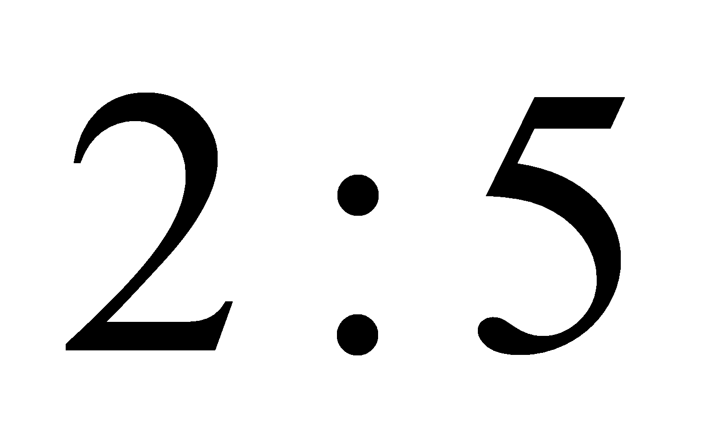
的投资比例开办了一家公司，约定除去各项支出外，所得利润按投资比例分成，若第一年盈利14000元，则甲、乙两人分别应得利润多少元？35．A、B两种商品的价格比是 ，如果每种商品的价格上涨
，如果每种商品的价格上涨 元，A、B两种商品的价格比变为
元，A、B两种商品的价格比变为 ，这两种商品的原价分别是多少？
，这两种商品的原价分别是多少？
36．在《国家空间科学中长期发展规划（2024-2050年）》中，明确了我国空间科学发展目标，提出我国拟突破的“极端宇宙”、“时空涟漪”、“日地全景”、“宜居行星”、“太空格物”5大科学主题．某班老师在进行相关科普时，让48名学生从这5大科学主题中各自选择一个喜欢的主题，最终选择“极端宇宙”、“时空涟漪”、“日地全景”、“宜居行星”、“太空格物”的人数比是
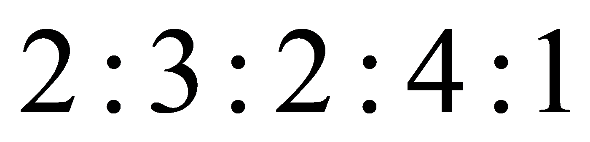
，那么喜欢“宜居行星”主题的人数是多少？37．甲、乙、丙三位同学向贫困山区的希望小学捐赠图书，已知这三位同学捐赠图书册数的比是 ，如果他们共捐374本，那么这三位同学各捐书多少册？（本题考查了一元一次方程的应用．解题关键是要读懂题目的意思，根据题目给出的条件，找出合适的等量）．
，如果他们共捐374本，那么这三位同学各捐书多少册？（本题考查了一元一次方程的应用．解题关键是要读懂题目的意思，根据题目给出的条件，找出合适的等量）．
38．有甲乙丙三个仓库存放货物，已知甲乙两仓库存货吨数比为  ，乙丙两仓库存货吨数比为
，乙丙两仓库存货吨数比为  ，若甲仓库向丙仓库运
，若甲仓库向丙仓库运  吨货物，则两个仓库货物吨数相同，求甲仓库原来存货吨数是多少吨？
吨货物，则两个仓库货物吨数相同，求甲仓库原来存货吨数是多少吨？
39．甲、乙、丙三位爱心人士向贫困山区的希望小学捐赠图书，已知甲、乙、丙三位爱心人士捐赠图书的册数之比是，如果他们共捐了748册图书，那么甲、乙、丙三位爱心人士各捐了多少册图书？
40．某公路收费站的收费标准是大客车20元，大货车10元，轿车5元，某天通过收费站的这三种车辆的数量之比是 ，共收费4800元，问这天通过收费站的三种车各是多少辆？
，共收费4800元，问这天通过收费站的三种车各是多少辆？
考点06 日历问题
41．下表是2024年 4月的日历表，在表中用形如下图的平行四边形框框出 4个数，请解答问题：

(1)若框出的4个数的和为74，请你通过列方程的办法，求出它们分别是哪4天？
(2)框出的4个数的和可能是 25 吗？为什么？
42．【综合与探究】同学们，大家一定很熟悉月历吧！你们知道吗？月历中有很多奥秘，
下面就让我们一起来探索吧！

(1)如图1是2024年10月的月历，小宇用带阴影的“十”字框框中5个数．
①这5个数中，最大数与最小数的差是 ；
②小宇发现当任意移动“十”字框时，框中的5个数之和始终是5的倍数，请计算说明他的发现成立．
(2)如图2是2024年10月的月历，小宇用如图所示的“凹”字框在月历中任意框中5个数，将这5个数分别用字母， ，
， ，
， ，
， 表示（如图3）．
表示（如图3）．
①请任选其中一个字母，用含这个字母的代数式表示这5个数的和．
②这5个数的和能等于101吗？若能，请求出这5个数；若不能，请说明理由．
43．图1是2025年11月份的日历，用图2所示的“九方格”框住图1中的9个日期，将其中被阴影方格覆盖的四个日期分别记为，，，．

(1) ______
______ （填“
（填“ ”，“
”，“ ”或“
”或“ ”）；
”）；
(2)数学思考：小乐认为（1）中猜想正确，他选用作差法来比较大小说理的过程如下，请你将其补充完整．
解：设
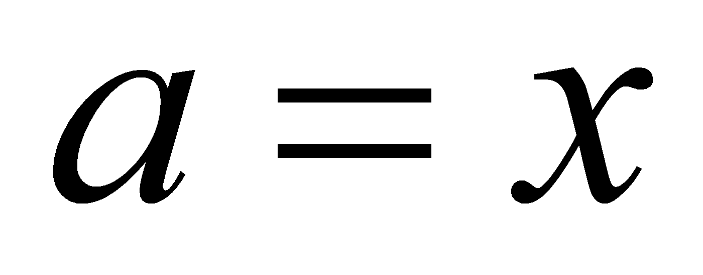
，则 ，
， ，
， ______可得
______可得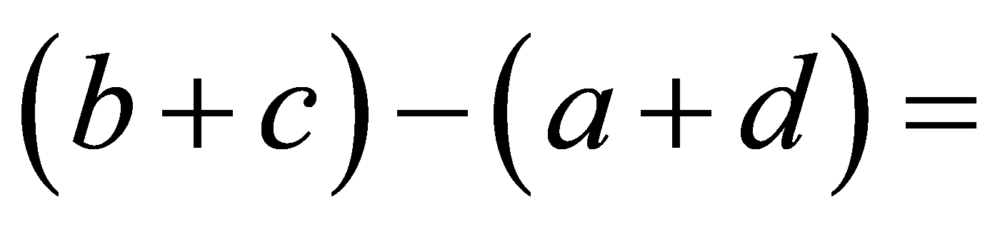
______；(3)当在图1的选择位置使 值为64，如若能，请框选；若不能，请说明理由．
值为64，如若能，请框选；若不能，请说明理由．
(4)当图2在图1的不同位置时，代数式 的值是否为定值？若是，请求出它的值；若不是，请说明理由．
的值是否为定值？若是，请求出它的值；若不是，请说明理由．
44．如图是大家非常熟悉的日历，在日历中，横向相邻的两个数相差1，纵向相邻的两个数相差7．我们选择不同的方式框住日历中的数，所得到的规律是不一定相同的，现在用一个“十”字模型框住了5个数．
观察2025年9月的日历，回答下列问题：

(1)若设十字框中间的数为a，求框中的十字框中的5个数的和是多少？
(2)小李一家外出游玩了5天，这5天的日期之和是75，小李一家几号外出的？
(3)在该月的月历上用十字框框出5个数，能使这5个数的和为100吗？如果不能，请说明理由，如果能，请求出十字框中间的数．
45．观察下图阴影方框内中间的数与其他四个数的关系．
(1)中间的数用y表示，左边的数是（ ），下面的数是（ ），方框中5个数的和是（ ）．

(2)当5个数的和是 时，这5个数分别是多少？在下图方格中填一填．
时，这5个数分别是多少？在下图方格中填一填．
46．在月历中，每个字母都代表某个具体日期．
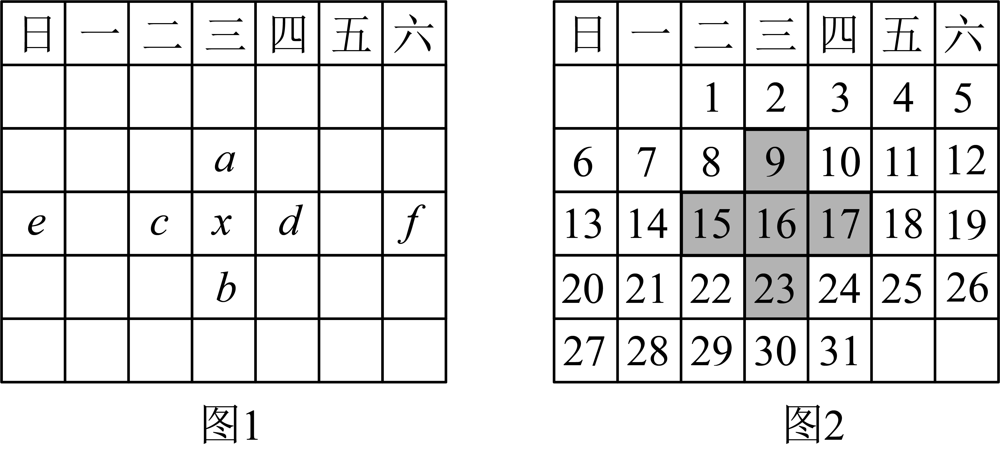
(1)在图（1）中任意框出五个数，则______，这5个数的和为______(都用含x的式子表示)；
(2)在图（1）中，
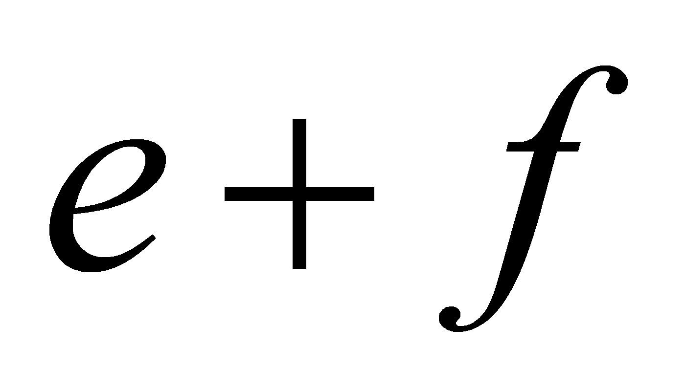
的和与x的关系是什么？通过计算说明；(3)已知图（2）是某个月的月历，如果用框出的5个数的和为80，求中间的那个数．
47．如图是2025年11月的月历表：

(1)如图1阴影部分所示，小明选取其中的7个连续数字进行研究，请探求这7个数字的总和与中间数9的关系，并说明理由；
(2)小明想探究非连续的9个数字是否也存在规律．他框出了如图2阴影部分的方框，并移动方框．若按日期的先后顺序给方框内的这9个数字依次编号 ，设这9个数字的和为S，第⑤个数字为请探求S与a的关系，并说明理由；
，设这9个数字的和为S，第⑤个数字为请探求S与a的关系，并说明理由；
(3)小明经过研究发现，除 中的方案外，仍可以在上面月历中选取非连续的9个数字，使结论与中的一样，请你把选取的9个数字用
中的方案外，仍可以在上面月历中选取非连续的9个数字，使结论与中的一样，请你把选取的9个数字用 铅笔上色．
铅笔上色．
48．下方左图是 年1月的月历，用如图所示的“T”字形框在月历中任意框出4个数（框中的数没有空白），如右图，设“T”字形框中的4个数分别为a、b、c、d．
年1月的月历，用如图所示的“T”字形框在月历中任意框出4个数（框中的数没有空白），如右图，设“T”字形框中的4个数分别为a、b、c、d．

(1)若 ，则________；若
，则________；若 ，则
，则 ________；
________；
(2)在移动“T”字形框的过程中，小明说被框中的4个数之和可能为 ，你认为他的说法对吗？请说明理由．
，你认为他的说法对吗？请说明理由．